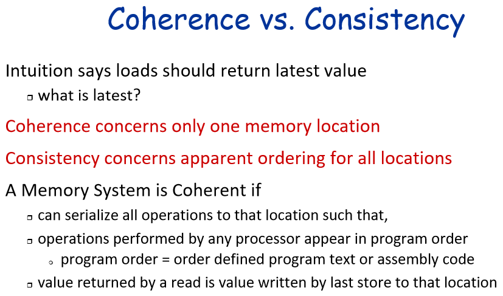
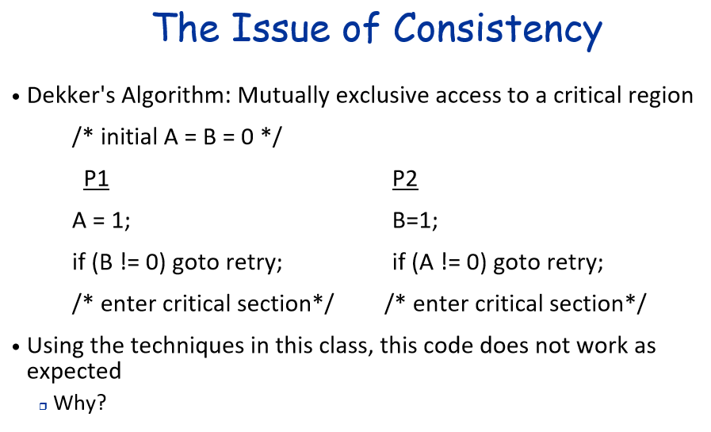
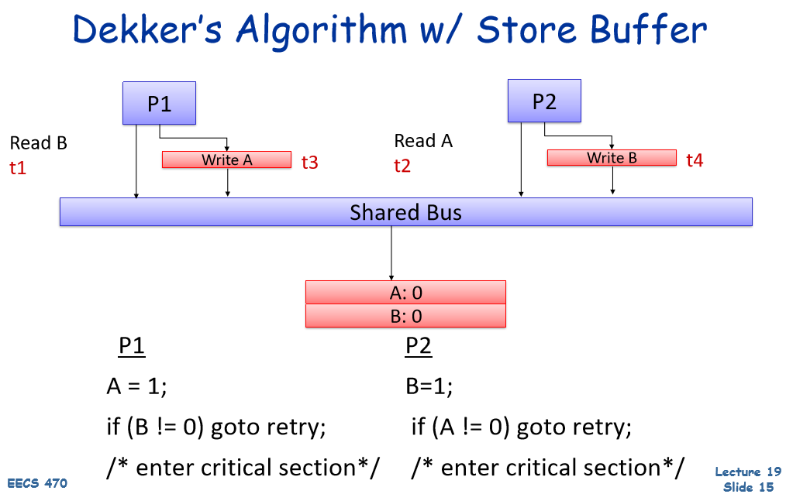
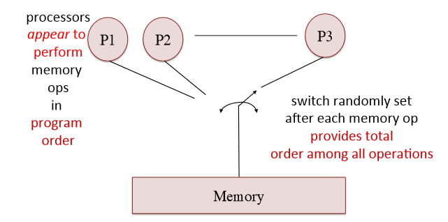

6 Memory Consistency

While cache coherence ensures that multiple copies of a single memory location are consistent across caches, memory consistency defines how updates to different memory locations appear across processors.
Why Does Memory Consistency Matter?
- In a single-core processor, instructions execute sequentially, so memory operations follow a strict order. But in multi-core/multiprocessor systems, things get more complex:
- Multiple processors execute memory operations in parallel.
- Caches and store buffers can hold writes before committing to memory.
- Memory itself is a shared resource with limited bandwidth, and requests from different processors may arrive at the same time.
- Since memory can only commit one operation at a time per memory location, different processors may see memory updates in different orders.

- “goto retry” means starting back at initial A = B = 0
- When we issue stores, memory may not be able to accept them right away
- So this may allow loads to bypass stores that aren’t completed yet
- Since the store’s aren’t going to the same address as the loads, the values won’t be forwarded
- So we could be doing loads before the store actually updates memory

6.1 Consistency Models
Memory consistency model specifies the order in which memory accesses may be performed by one thread, and the order they become visible to other threads in the program.
6.2 Sequential Consistency

A system is sequentially consistent if the result of any execution is the same as if all operations were executed in some sequential order, and the operations of each processor appear in that order.
Key Properties:
- Global Total Order: All memory operations appear to execute in a single, global sequence
- Program order preserved: each processor must execute its own operations in program order
- Interleaving across processors: The global order is an interleaving of memory operations from all processors, ensuring no reordering of loads and stores across different processors
Problems:
- Difficult to implement efficiently in HW
- Unnecessarily restrictive
- Most parallel programs won’t notice out-of-order accesses
- Conflicts with latency hiding techniques
6.3 Relaxed Consistency
Allow:
- Reordering of memory operations (under controlled conditions).
- Store buffering and speculative execution (to optimize performance).
- Explicit synchronization primitives (e.g., memory fences, atomic operations) to enforce ordering only where needed.
6.3.1 Total Store Order (TSO)
Loads can be reordered after stores, but stores appear in order to all processors
6.3.2 Processor Consistency
Writes from a single processor appear in order, but different processors may see updates in different orders.
6.3.3 Partial Store Order
- Stores can be reordered with other stores, but
- Loads still execute in order relative to each other (other loads)
6.3.4 Relaxed Memory Order
- Loads to be reordered with loads.
- Stores to be reordered with stores.
- Loads and stores to be reordered with each other.
6.3.5 Weak Ordering
Memory accesses can be reordered arbitrarily, but a synchronization operation (e.g., fence/barrier) must be issued to enforce ordering.
6.3.6 Release Consistency
- Acquire operation (before a critical section) ensures visibility of all previous writes.
- Release operation (after a critical section) ensures that writes are visible before allowing others to enter.
6.4 Examples
6.4.1 Basic
// Processor P1
X = 1; // (A)
Y = 1; // (B)
// Processor P2
r1 = Y; // (C)
r2 = X; // (D)Since both processors are executing independently, different memory models allow different interleavings of these operations:
- Sequential Consistency (SC) ensures a single global order.
- If P2 sees r1 = 1 (because Y=1 was written at (B)), then it must see r2 = 1 (because X=1 at (A) must have happened first).
- Relaxed Consistency (e.g., RMO, PSO) allows reordering.
- r1 = 1 but r2 = 0 is possible if the store to Y (B) became visible before the store to X (A).